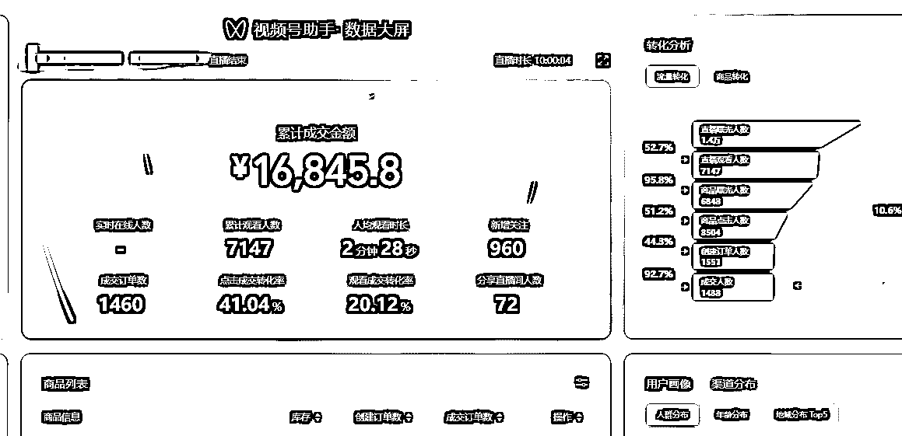
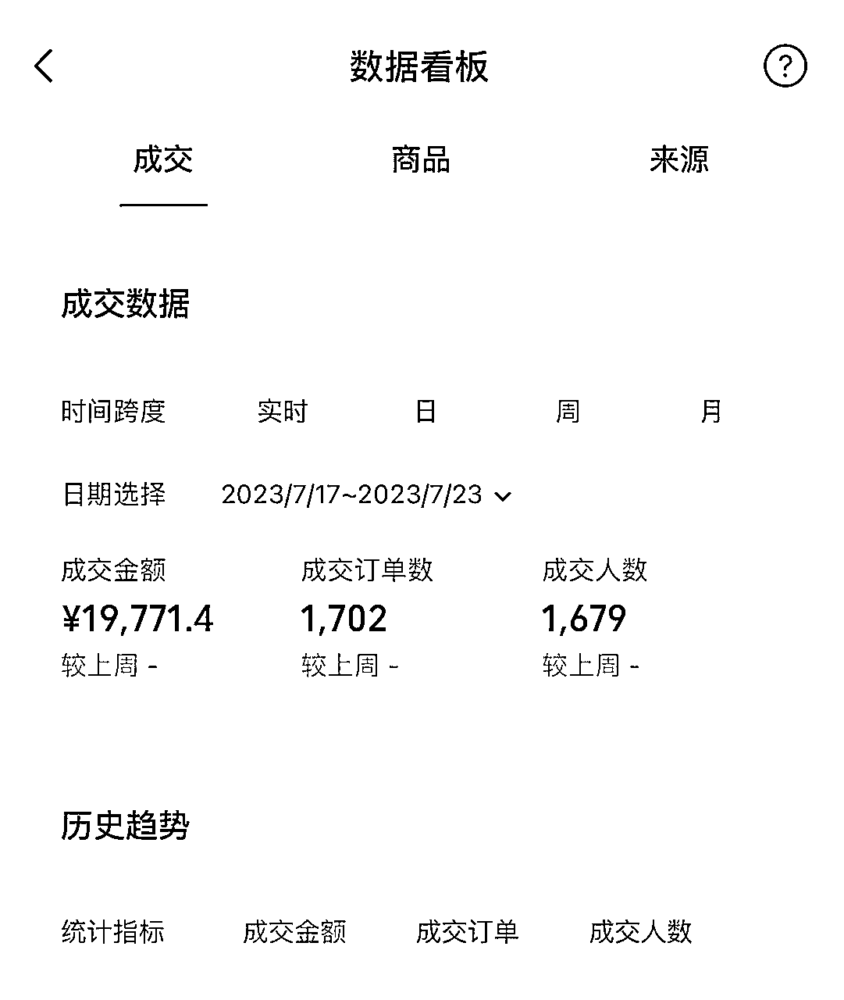
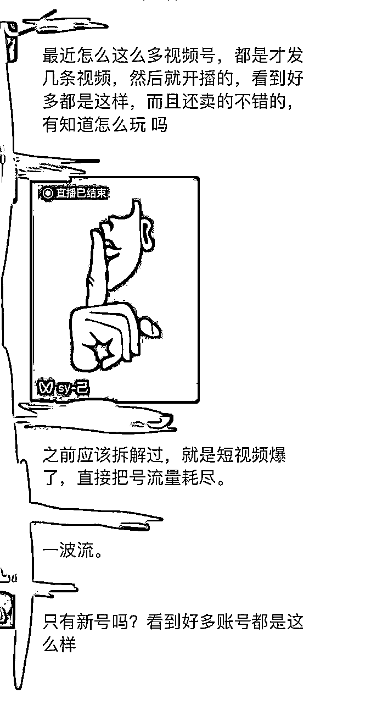
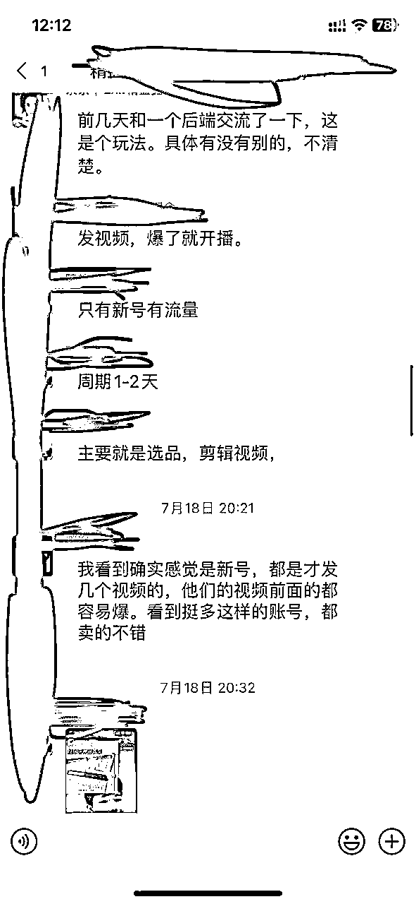
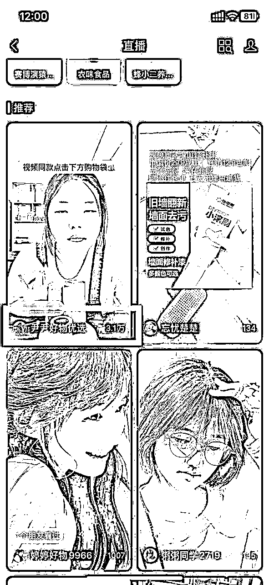
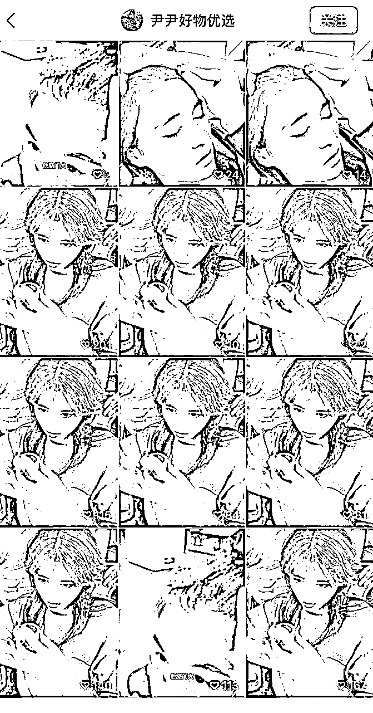
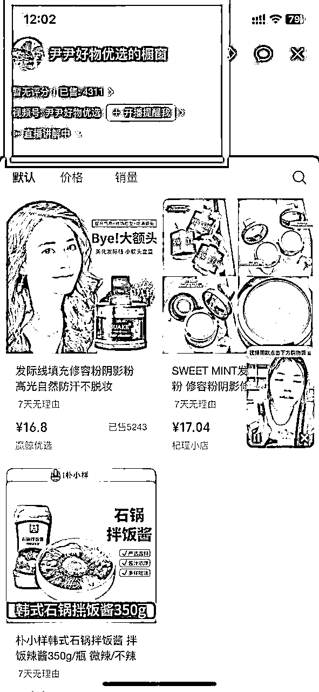
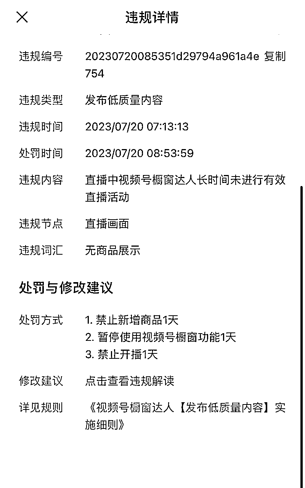

来源：https://tjivb5uf6y.feishu.cn/docx/Qc3ldPvqzosHW7x1UK5c1pR0nOh
大家好，我是小竹，一个在网赚行业多年的小白。
第一次在星球分享，文笔排版可能较乱，诸位看官见谅...
今天给大家分享我是如何根据圈友@梵野的一篇文章做到单场直播做到1.8Wgmw，盈利7000+的。
圈友梵野原文链接：https://t.zsxq.com/10sXmBb6o


7月18日习惯性打开生财，第一眼就看到了梵野的这篇文章。因为我一直在视频号直播，所以对视频号很敏感。
刚好当天中午在另外一个群里看到群友在讨论，所以印象更加深刻。
注重别人隐私，打了码。


刷了一会视频号，确实发现很多打爆的直播间，于是第二天立马上手。
当时没有截图，下面这张是我写文章时随意截取的一个直播间的图片。

主页素材：

橱窗销售：

可以看到，我随便点击的一个直播间已经销售4300+，根据最低售价16.8，这个这个直播间GMV：4300*16.8=72240. 佣金40%来算也就是28896元。
在确定我可以做的时候，立马在考古加进行选品。选品这块星球有大量文章，我就不赘述了。
在选到合适的产品之后，将素材下载下来，进行去重。然后注册新账号开始发布第一个作品。
如果基础播放量达到500左右，说明账号素材都没有问题，素材去重过关，可以接着怼素材。然后开播。
我是在19号中午11点发布的第一个素材，基础播放500+，下午两点发布的第二条素材，然后开播。
直播需要拉时长，前期没流量很正常，直播推荐的流量不是我们需要的，我们要的是短视频引流。所以一定要拉时长，新号可以参加新主播计划，首场直播20分钟后，可以领券。
一定要拉时长，话术不重要，素材爆了之后，基本不需要讲解，只需要回答问题就行了 。通用的话术，改一下就能用。
直播过程一定要关注视频流量，不推流直接补素材。如果素材能爆，一条素材反复怼，只要短视频有流量坚持不下播。
直播间内不需要在乎背景如何，短视频进来的人都是精准用户。手机开播，贴张图片就可以。如果你不好意思露脸，就把图片拉到最大，直接说话就行.
最大的问题就是样品，当素材爆了之后，一定要尽快找到样品，实在没有找个类似的也行，不然会违规。我就吃在了没有样品的亏上，直播间被封掉了。

这一点吃了很大的亏，这种素材根据我的测试不要进行投流，很容易审核不过，直接导致加热权限被关闭，据我观察，对播放是有影响的。
一波流玩法比较废号，想要稳定盈利的前提必须要有大量账号。整个流程内，最重要的素材，其次是选品。只要视频能爆，偏门小众的东西都能卖出去。区别是量多量少的问题。选品一定要找低价的，冲动消费不要给用户思考时间，而价格通常是很多人犹豫的重要原因、
太阳下没有新鲜事，去年这个时候在视频号也是这个玩法，视频爆了直接开播，当时也有很多人赚到盆满钵满。
助各位看官早日起飞！